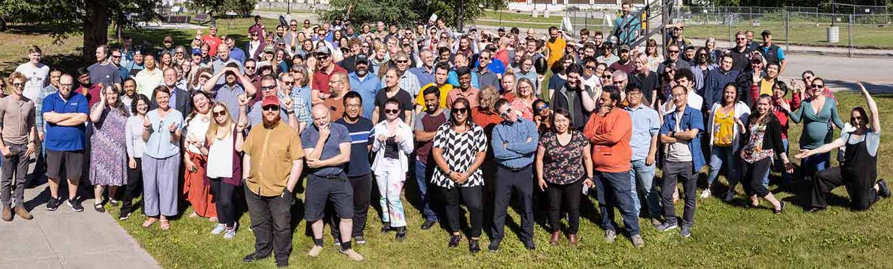

Prospective Students

Current Openings
Any available, funded positions for which I am seeking students or postdocs will be posted here
I do not currently have any positions open. However, those interested in working with me on problems related to seismic tomography, computational seismology, nuclear treaty monitoring (or any ideas they may have!), are encouraged to reach out by email to discuss possibilities.